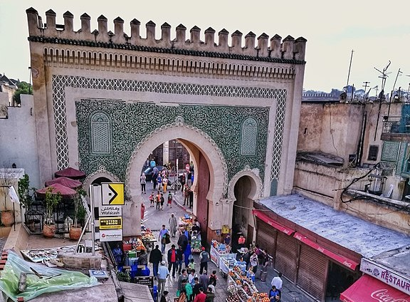

<ion-header [translucent]="true">
  <ion-toolbar color="gold">
    <ion-buttons slot="start">
      <ion-menu-button ></ion-menu-button>
    </ion-buttons>
    <ion-title>
      Home
    </ion-title>
  </ion-toolbar>
</ion-header>

<ion-content [fullscreen]="true" class="ion-padding" class="video-background">
        <ion-slides pager="true" [options]="slideOptsOne" #slideWithNav
          (ionSlideDidChange)="SlideDidChange(sliderOne,slideWithNav)">
          <ion-slide>
            
          </ion-slide>
          <ion-slide>
            
          </ion-slide>
          <ion-slide >
            
          </ion-slide>
          <ion-slide >
            
          </ion-slide>
          <ion-slide >
            
          </ion-slide>
          <ion-slide >
            
          </ion-slide>
        </ion-slides>
        <ion-card>
          <ion-card-header>
            <ion-card-title>Découvrez la ville culturelle de Fes</ion-card-title>
          </ion-card-header>
        
          <ion-card-content>
            <iframe width="100%" height="70%" src="https://www.youtube.com/embed/rs_jLwkLXMw" title="YouTube video player" frameborder="0" allow="accelerometer; autoplay; clipboard-write; encrypted-media; gyroscope; picture-in-picture" allowfullscreen></iframe>
          </ion-card-content>
        </ion-card>
        <ion-card>
          <ion-card-header>
            <ion-card-title>Menu</ion-card-title>
          </ion-card-header>
        
          <ion-card-content>
            <ion-grid>
              <ion-row>
                <ion-col></ion-col>
                <ion-col >
                  <ion-fab-button color="gold" [routerLink]="['/menu/store']">Store</ion-fab-button>
                </ion-col>
                <ion-col>
                  <ion-fab-button color="dark" [routerLink]="['/menu/food']">Food</ion-fab-button>
                </ion-col>
                <ion-col></ion-col>
              </ion-row>
              </ion-grid> 
              <ion-grid>
              <ion-row>
                <ion-col></ion-col>
                <ion-col >
                  <ion-fab-button color="dark" [routerLink]="['/menu/riad']">Riad</ion-fab-button>
                </ion-col>
                <ion-col>
                  <ion-fab-button color="gold" [routerLink]="['/menu/culture']">Historic Place</ion-fab-button>
                </ion-col>
                <ion-col></ion-col>
              </ion-row>
            </ion-grid> 
          </ion-card-content>
        </ion-card>
       
      
</ion-content>